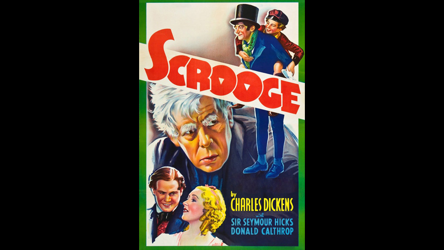

1935

CAST
Ebenezer Scrooge
-
Sir Seymour Hicks
Bob Cratchit
-
Donald Calthrop
Mrs. Cratchit
-
Barbara Everest
Tiny Tim Cratchit
-
Philip Frost
Fred (Scrooge's nephew)
-
Robert Cochran
Fred's wife
-
Eve Gray
Marley's Ghost
-
Claude Rains (voice, uncredited)
Spirit of Christmas Past
-
Marie Ney (physical outline only)
Spirit of Christmas Present
-
Oscar Asche
Spirit of Christmas Future
-
C.V. France
Belle
-
Mary Glynne
Belle's husband
-
Garry Marsh
Scrooge's charwoman
-
Athene Seyler
Poor man
-
Maurice Evans
Poor man's wife
-
Mary Lawson
Poulterer with Prize Turkey
-
Morris Harvey
Undertaker
-
D.J. Williams
Scrooge's laundress
-
Margaret Yarde
Old Joe
-
Hugh E. Wright
Middlemark
-
Charles Carson
Worthington
-
Hubert Harben
CREATIVE TEAM
Director
-
Henry Edwards
Screenplay
-
H. Fowler Mear
PRODUCTION
Hicks appears as Ebenezer Scrooge, the miser who hates Christmas. It was the first sound version of A Christmas Carol, not counting a 1928 short subject that now appears to be lost. Hicks had previously played the role of Scrooge on the stage many times beginning in 1901, and again in a 1913 British silent film version.